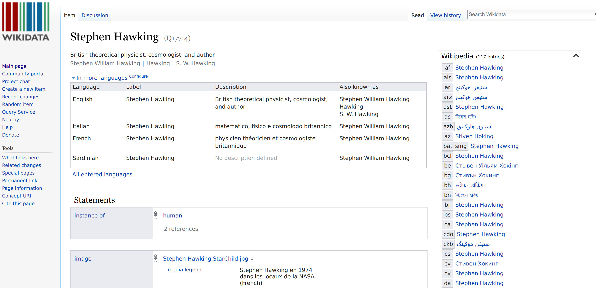
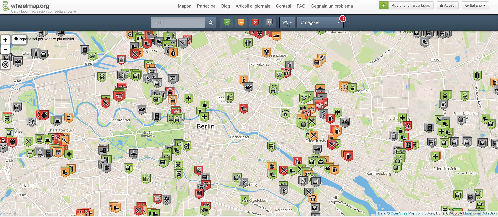

Open Data
Matteo Fortini - 15 Marzo 2018Open Data
- Social Network
- IoT Internet of Things
- Big Data
- Intelligenza Artificiale (o Machine Learning)
Social Network
Social Network
Se non paghi per un prodotto, sei tu il prodotto. https://myactivity.google.com/myactivitySocial Network
Se non paghi per un prodotto, sei tu il prodotto.Social Network
Se non paghi per un prodotto, sei tu il prodotto.Social Network
Se non paghi per un prodotto, sei tu il prodotto.
Social Network
(1 miliardo di ore al giorno)
Social Network
Fonte: PornHub insights 2017
Internet of Things

Fonte: Ericcson
Intelligenza Artificiale

Open Data
Dati + Licenza d'uso
- CC-By
- CC-By-SA
CC-By-NC-...
Perché generati da volontari
Perché generati da volontari
Perché generati da volontari
Perché generati da volontari
(Il Leone di Palmira distrutto disponibile in 3D)Perché generati da volontari
Perché generati da volontari
Perché generati da volontari
Perché finanziati con denaro pubblico
Perché finanziati con denaro pubblico
Perché finanziati con denaro pubblico
Perché finanziati con denaro pubblico
Perché finanziati con denaro pubblico
Perché finanziati con denaro pubblico
Perché finanziati con denaro pubblico

Perché finanziati con denaro pubblico
Perché finanziati con denaro pubblico
Perché finanziati con denaro pubblico

Open by default
Art. 52 del CAD - Codice Amministrazione Digitale
2. I dati e i documenti che i soggetti di cui all'articolo 2, comma 2, pubblicano, con qualsiasi modalità, senza l'espressa adozione di una licenza di cui all'articolo 2, comma 1, lettera h), del decreto legislativo 24 gennaio 2006, n. 36, si intendono rilasciati come dati di tipo aperto ai sensi all'articolo 1, comma 1, lettere l-bis) e l-ter), del presente Codice, ad eccezione dei casi in cui la pubblicazione riguardi dati personali.
FOIA - Freedom Of Information Act
Applicazioni - Confiscatibene
Applicazioni - Elezioni 2018
(Mappe di Giuseppe Sollazzo)
Applicazioni - Accessibilità
Applicazioni - Emergenze
Applicazioni - Trasporto Pubblico
Applicazioni - Imprese
Un mercato da 3.000 miliardi di dollari (Mc Kinsey)
Open Data 200 - by FBK e GovLab
Applicazioni - Open Data 200
http://italy.opendata500.com
Applicazioni - Open Data 200
Studiomapp - Ravenna
Open Data 200 - Conclusioni
- L’ecosistema italiano è in via di sviluppo (dati ad alto valore commerciale restano chiusi).
- Necessario garantire maggiore qualità dei dati.
- Benefici e impatto difficili da misurare, ma la mappatura e la costruzione dell’open data user base è analisi sul riuso sono necessarie.
- Questo aspetto è particolarmente critico in Italia, dove i dataset di alto valore commerciale sono la principale fonte di guadagno per gli enti (dati del catasto e registro imprese)
Grazie a Francesca de Chiara
Il futuro e (restare) giovanissimi
- Introduzione al pensiero computazionale
- Lifelong Kindergarten (MIT, Mitch Resnick)
- 4P Creative Learning:
- Project
- Passion
- Peer
- Play
- Tinkering o "smanettamento": fare una cosa che entrambi (maestro, discepolo) non conosciamo (cit Annibale d'Elia). Preparare i più giovani a lavori che non esistono ancora.